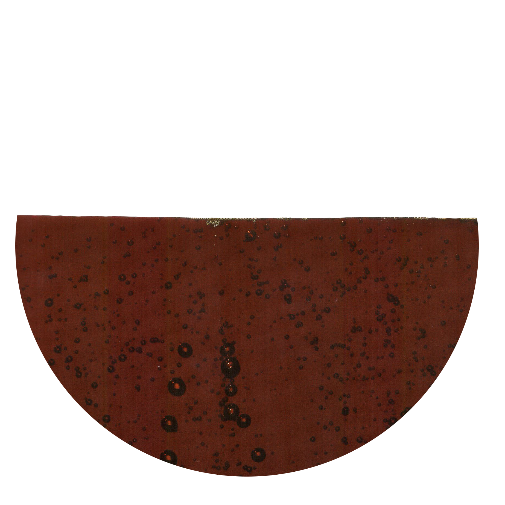

Caramel color

8028-89-5
Synonyms or siblings
Caramel coloring, Plain caramel, Sulfite caramel, Ammonia caramel, Sulfite ammonia caramel
Funtion
Appeal - Color
Description
Caramel coloring, widely used globally, darkens foods like coffee and colas. Made from cooked sugar, it's processed on five continents in four types (150a, b, c, d) for various foods. It alters color without affecting nutrition and initially used by brewers, it expanded to soft drinks in the early 1900s, adapting over time amid safety concerns.
다양한 이름
캐러멜Ⅰ, 캐러멜Ⅱ, 캐러멜Ⅲ, 캐러멜Ⅳ
기능
착색료
설명
캐러멜 색소는 비타르계 천연 색소로 간장, 과자류, 청량음료류, 알콜성 주류 등에 식품 착색제로 사용된다. 암갈색-검은색의 덩어리 혹은 가루, 페이스트상의 물질로서 종류는 여러가지가 있는데 갈색의 착색료로서 적합한 색소이다. 수용액은 연한 갈색-흑갈색을 나타낸다. 세계에서 가장 널리 소비되는 식품 색소 중 하나로, 연간 20만 톤 이상이 생산된다.